Open Music Theory：繁體中文版
輪旋曲式
輪旋曲式（rondo）的基本概念很簡單：一個反覆返回的主要段落，與對比段落交替出現。和其他曲式一樣，輪旋曲式也可以包含各種輔助段落。依慣例，其中重複的主要段落稱為疊句（refrain，或A），對比段落稱為插部（episodes），也可用B、C等字母表示。
在整個樂章中，疊句的材料基本相同，容許一些裝飾或縮短，而且每次都在主調出現。插部在調性上與疊句形成對比，通常在主題上也有對比。同一個插部可以在樂章中出現多次，也可以只出現一次。
輪旋曲式最常見的類型，是五段輪旋曲式（ABACA）與奏鳴輪旋曲式（ABACABA），如例1所示。兩者主要有兩個不同之處：
{kind=link}
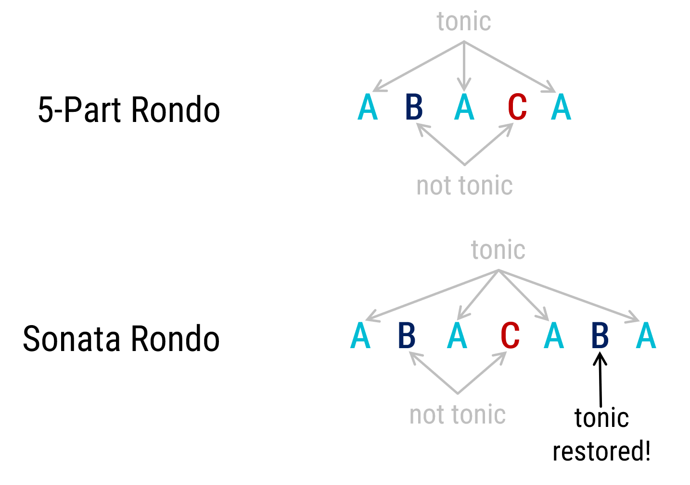
- 5-Part Rondo＝五段輪旋曲式；
- Sonata Rondo＝奏鳴輪旋曲式。
- tonic＝主調；
- not tonic＝非主調；
- tonic restored!＝恢復主調！上圖ABACA的主調箭頭指向三次A，非主調箭頭指向B與C。
下圖ABACABA的灰色主調箭頭指向四次A，非主調箭頭指向第一次B與C，黑色「恢復主調」箭頭另指向第二次B。
查看英文原文
Key Takeaways
Conceptually, rondo is quite simple: the form consists of a recurring main section that alternates with contrasting sections. As with other forms, rondo can include a variety of auxiliary sections. In rondo form, it is tradition to call the repeating main section the refrain (or A), and the contrasting sections are referred to as episodes (and/or by letters: B, C, etc.).
The refrain material is essentially the same throughout the course of a movement (allowing for some embellishment or abbreviation) and is always heard in the tonic key. Episodes contrast with refrains tonally, and usually thematically as well. A given episode may occur multiple times in the movement or only once.
The most common manifestations of rondo form are either five-part rondo (ABACA) or sonata rondo (ABACABA), summarized in Example 1. There are two main differences between them:
- In sonata rondo, the C section is often akin to a sonata form’s development section, whereas in a five-part rondo, the C section is likely to be a relatively stable thematic statement like any other episode.
- In sonata rondo, the first ABA (i.e., ABACABA) constitutes the equivalent of a complete sonata exposition (without the repeat, and it ends in the tonic), and the second ABA (i.e., ABACABA) functions as the recapitulation, where the B section is now transposed to the tonic key.
疊句由一個或多個樂句組成，甚至可以是一個完整的二段式。通常可預期它是相對安定的主題陳述，並以完全正格終止（PAC）清楚收尾。插部也可以有這樣的結構，但調性及旋律或動機材料與疊句對比；它也可以包含轉調、半音和聲與樂句擴展等不安定因素。插部可以以清楚的PAC結尾，也可以有模糊的結尾，甚至沒有終止式，而透過轉化過程直接融入再過渡段。
查看英文原文
Refrains, Episodes, and Auxiliary Sections in Rondo Form
Refrains are constructed as a combination of one or more phrases and could even be an entire binary form. You can expect that they will have a clear ending punctuated with a perfect authentic cadence (PAC) and will be relatively stable thematic statements. Episodes may be structured like that as well (though with contrasting keys and melodic/motivic material), or they can include destabilizing features like modulation, chromatic harmony, and phrase expansion. Episodes may end with a clear PAC, or they may have ambiguous endings, even lacking a cadence and merging into a retransition section instead through the process of becoming.
Like other forms, rondo form can have auxiliary sections. The most common are retransitions that generate anticipation for the refrain’s return. Codas are also quite common, but introductions are not.
插部分析的難題：過渡段⇒插部，或插部⇒再過渡段
輪旋曲式和其他曲式一樣，可以採用輔助段落的各種組合，其中尤其常見使疊句返回更具戲劇性的再過渡段。由於插部的結構往往比疊句鬆散，兩個段落可能透過轉化過程（⇒）融合在一起。尤其可能是過渡段逐漸成為插部，兩個曲式段落之間沒有明確分界。同樣地，插部本身也可能沒有達到清楚的終止結尾，也就是插部所在調的PAC，而逐漸成為再過渡段，準備下一次疊句的出現。不過，同一個插部同時出現這兩種情況的可能性不高。連接段落（過渡段／再過渡段）與安定主題陳述（疊句及插部）在結尾上有一項重要差別：連接段落往往強調抵達屬和聲，安定主題陳述則往往強調抵達PAC。
查看英文原文
Analytical Challenges with Episodes: Transition ⇒ Episode or Episode ⇒ Retransition
Like the other forms, rondos may include any combination of auxiliary sections, though retransitions that dramatize the return of the refrain are particularly common. Since episodes are often relatively looser than their refrain counterparts, two sections may blend together through the process of becoming (⇒). In particular, a transition may become an episode without any clear delineation of the two formal sections. Similarly, the episode itself may not reach a clear cadential conclusion (i.e., a PAC in the key of the episode) and instead may become a retransition that prepares for the statement of another refrain. However, it is unlikely to find both of these situations occurring within a single episode. One of the important distinctions between the end of a connective section (transition/retransition) and a stable thematic statement (refrains and episodes) is that connective sections tend to emphasize their arrival on the dominant, while stable thematic statements tend to emphasize the arrival at a PAC.
例2。瑪麗亞・海絲特・帕克，C 大調鋼琴奏鳴曲 Op. 7，第三樂章——音訊（YouTube）——點此查看樂譜（PDF）。
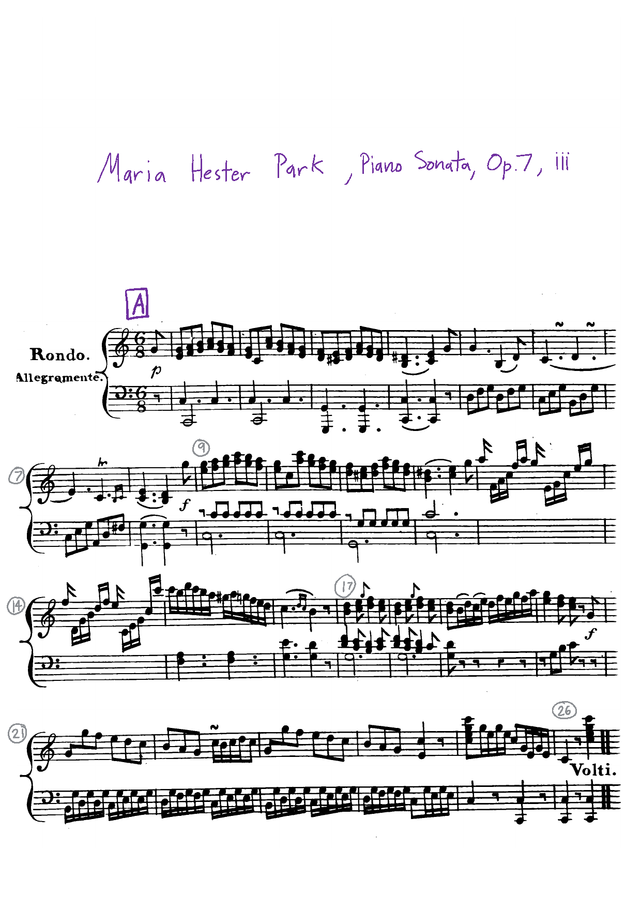
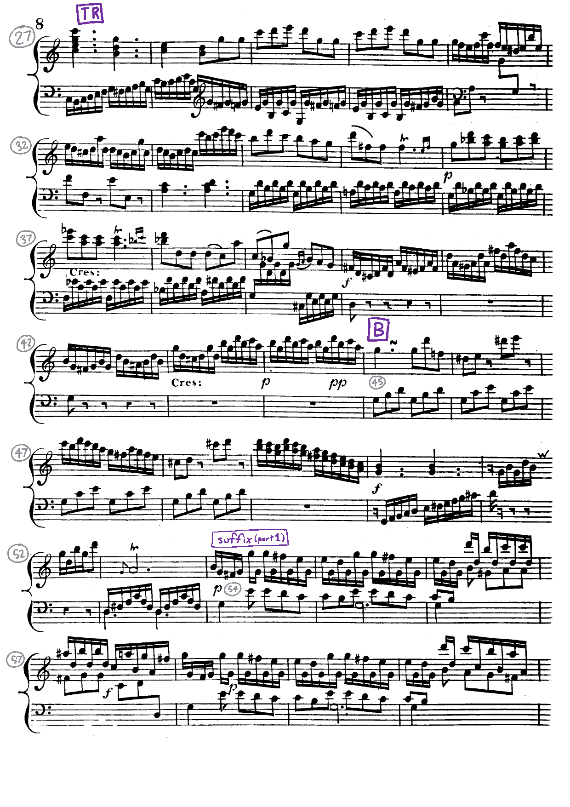
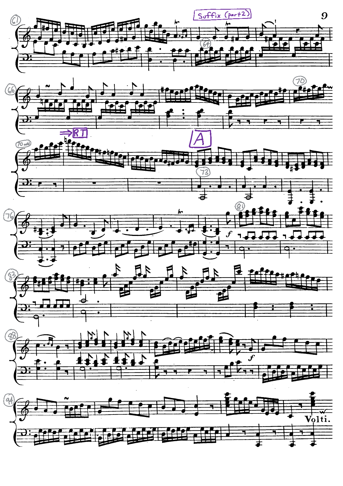
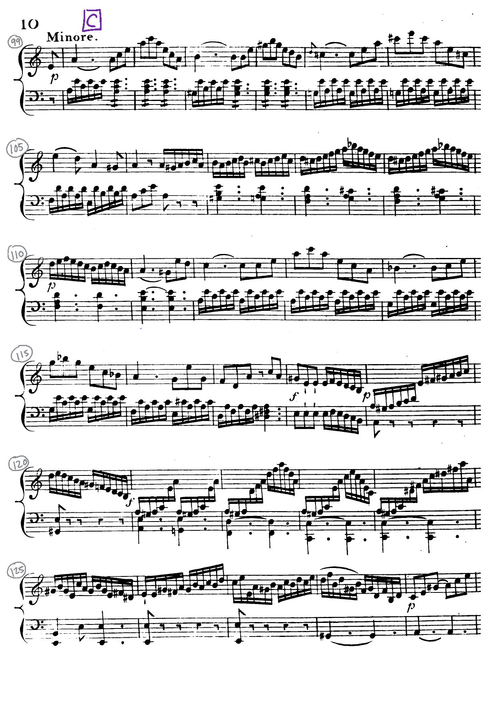
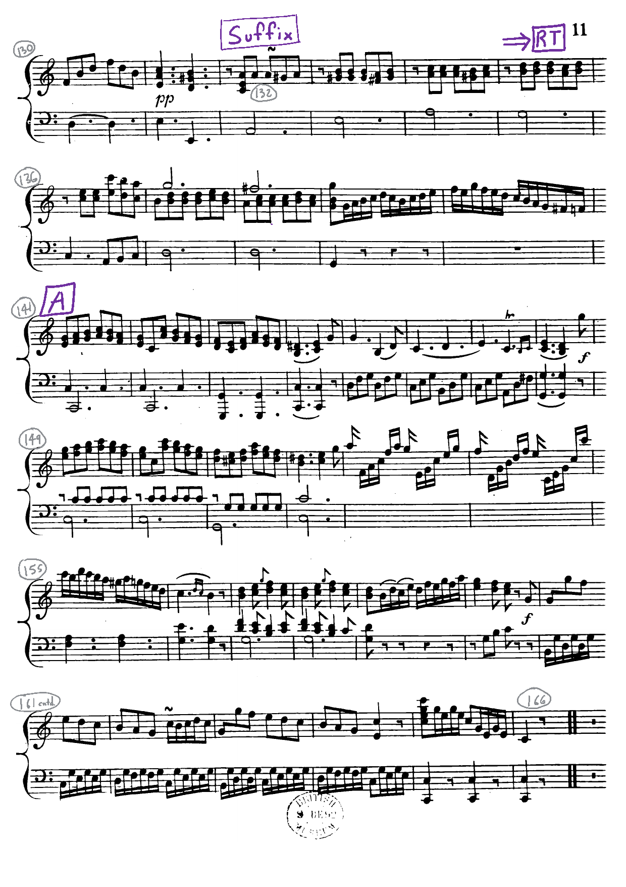
手寫標題Maria Hester Park, Piano Sonata, Op. 7, iii＝瑪麗亞・海絲特・帕克，鋼琴奏鳴曲Op. 7，第三樂章。
- Rondo＝輪旋曲；
- Allegremente＝愉快地；
- Minore＝小調；
- Volti＝翻頁。
- A＝疊句；
- B／C＝插部；
- TR＝過渡段；
- RT＝再過渡段；
- Suffix (part 1／part 2)＝後綴（第一／第二部分）；
- Suffix＝後綴；
- cont’d＝接續前一小節。
p＝弱，pp＝很弱，f＝強，Cres.＝漸強。
保留原譜手寫小節號與分析標記。
瑪麗亞・海絲特・帕克於1796年創作的 C 大調奏鳴曲 Op. 7，其終樂章是五段輪旋曲式相對清楚的例子。A段（疊句）涵蓋第1–26小節，由多個樂句組成。B段（第一插部）並沒有立即從第27小節開始；它與A之間隔著過渡段（第27–44小節）。過渡段在包含調式混合的半音化段落中，於第38小節轉到屬調。有別於多數過渡段，它在第42–44小節結束於即將出現的局部主和弦，也就是 G 大調主和弦，而非局部屬和弦。B的主要主題材料涵蓋第45–54小節，其結尾與一個後綴的起點銜接重疊；後綴在約第71小節成為再過渡段，從和聲上準備第73小節A的返回。第二次A涵蓋第73–98小節，完整重複第一次A。C（第二插部）緊接著第二次A，從第99小節開始，位於形成對比的下中音調 A 小調。C段（第99–132小節）比B長，其結尾與後綴的開頭銜接重疊，後綴約在第135小節成為再過渡段。第三次、也是最後一次A從第141小節開始，再次完整重複最初的A。
查看英文原文
Five-Part Rondo Example
Example 2. Maria Hester Park, Piano Sonata in C major, Op. 7, 3rd movement – Audio (YouTube) – Click to See Score (PDF)
The final movement from Maria Hester Park’s Sonata in C major, Op. 7, from 1796 is a relatively clear example of a five-part rondo form. The A section (refrain) lasts from mm. 1–26 and consists of multiple phrases. The B section (episode 1) does not start right away at m. 27; it is instead separated from A by a transition (mm. 27–44) that modulates to the key of the dominant in m. 38 during a passage of chromaticism involving modal mixture. Unlike most transitions, this transition actually ends on the upcoming local tonic of G major (mm. 42–44) instead of the local dominant. B‘s primary thematic material lasts from mm. 45–54, and its ending is elided with a suffix that eventually becomes a retransition (around m. 71) that harmonically prepares for the return of A in m. 73. This second statement of A lasts from mm. 73–98 and is a complete repeat of the first statement of A. C (episode 2) starts in m. 99, immediately after the second statement of A, and is in a contrasting key, the submediant (A minor). The C section (mm. 99–132) is longer than the B section. Its ending elides with the start of a suffix that becomes a retransition (around m. 135). The third and final statement of A starts in m. 141 and is again a complete repeat of the initial statement of A.
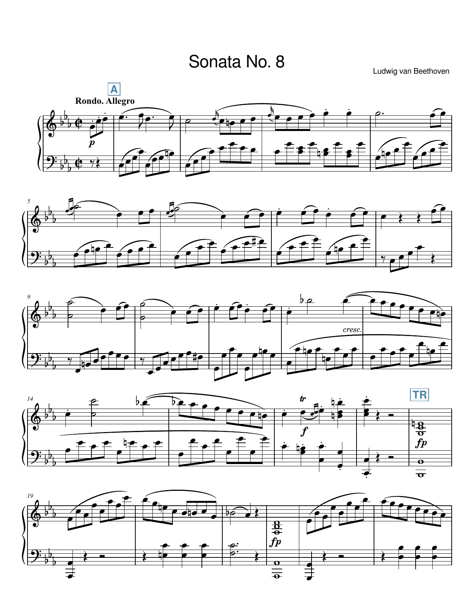
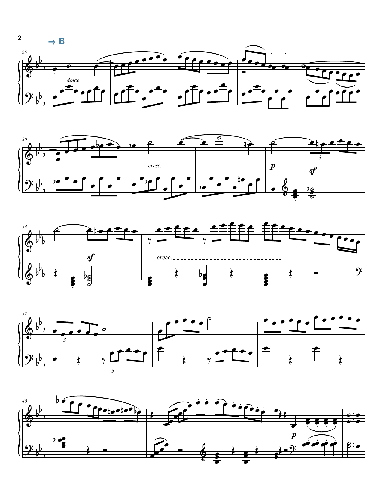
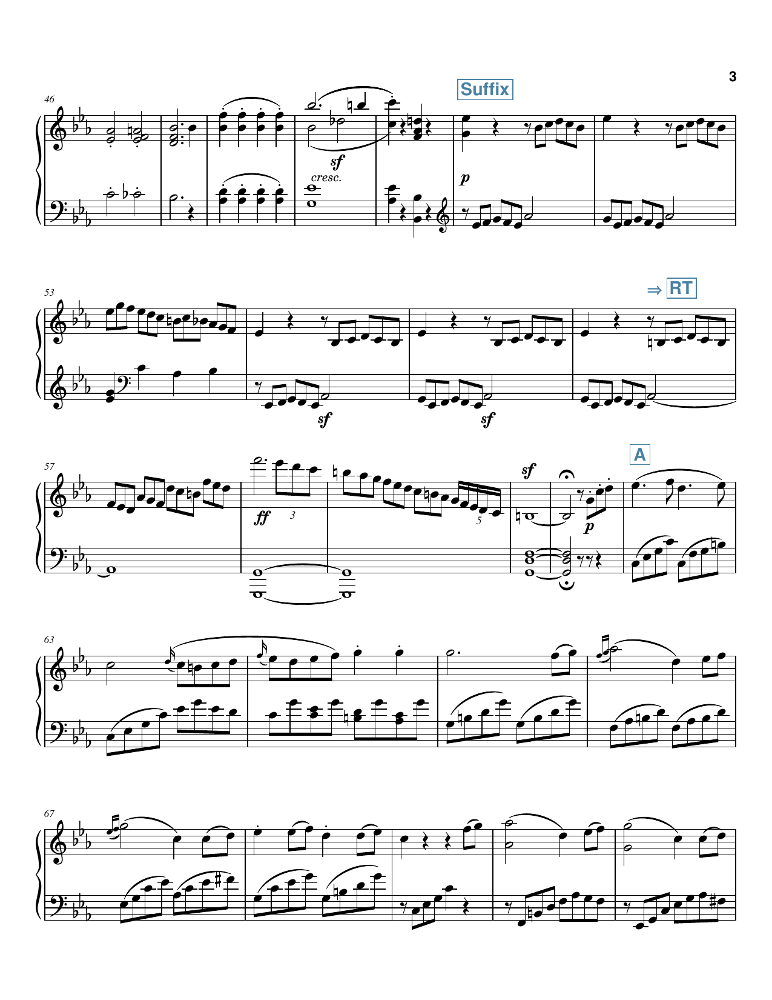
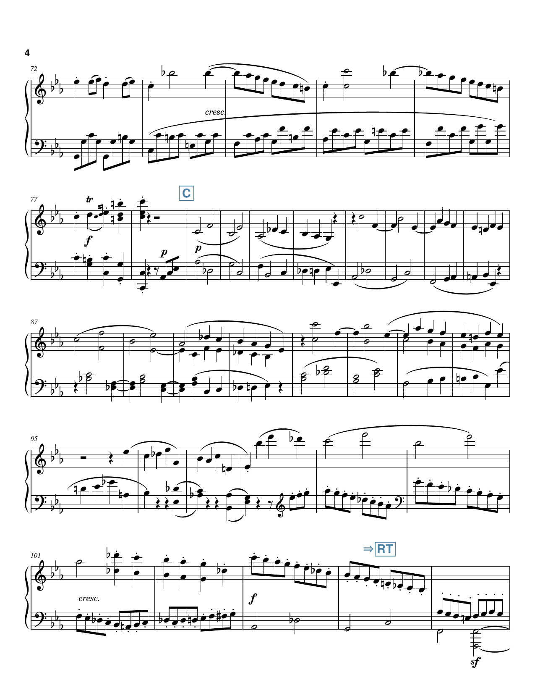
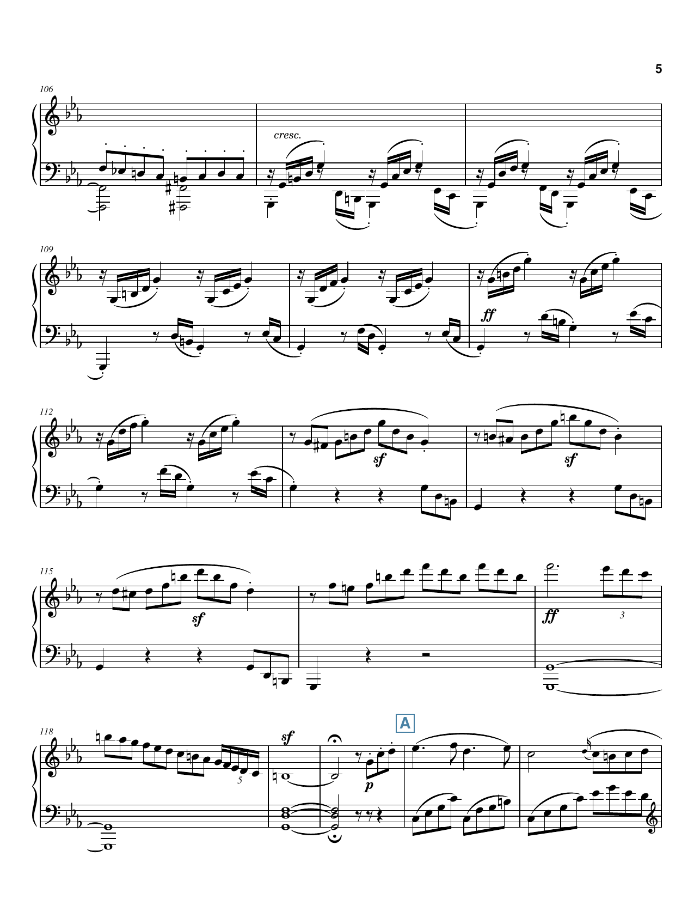
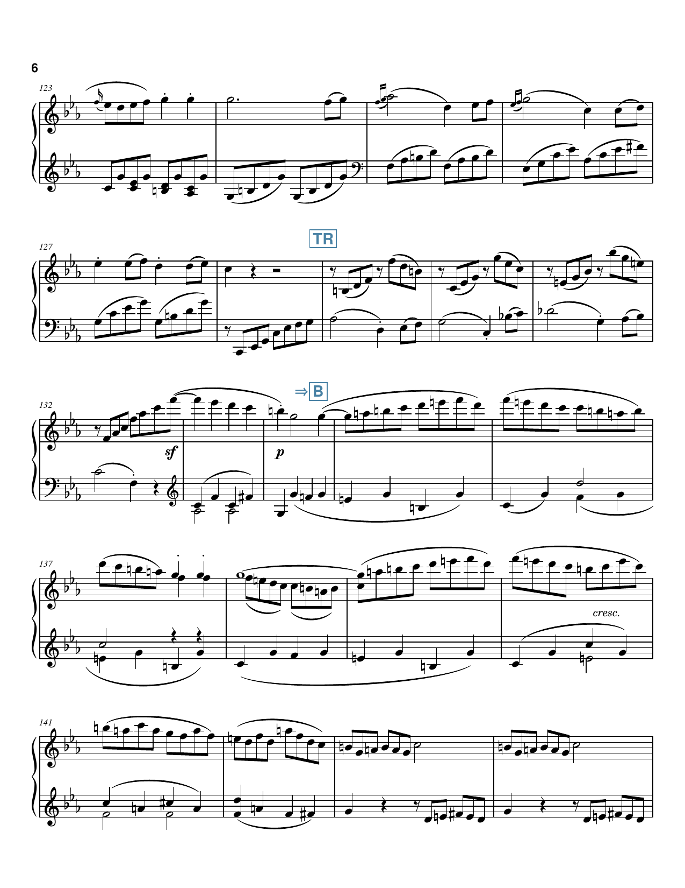
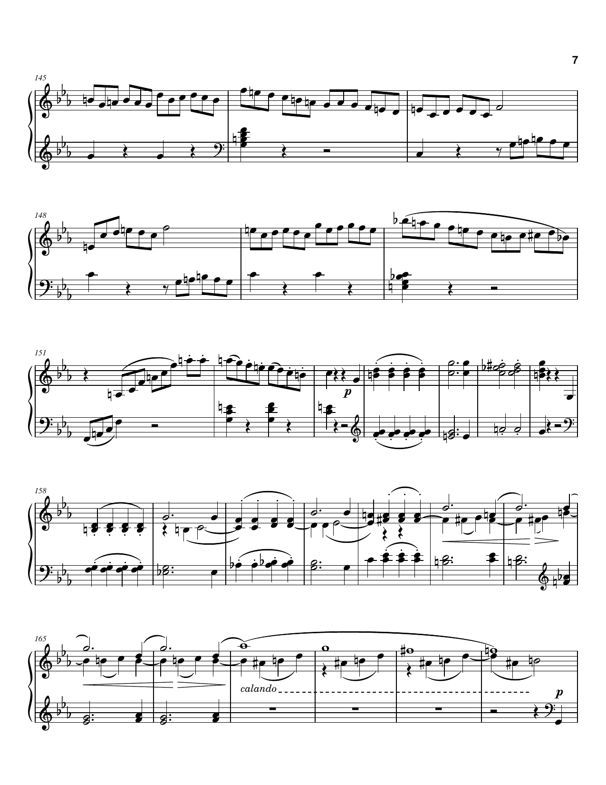
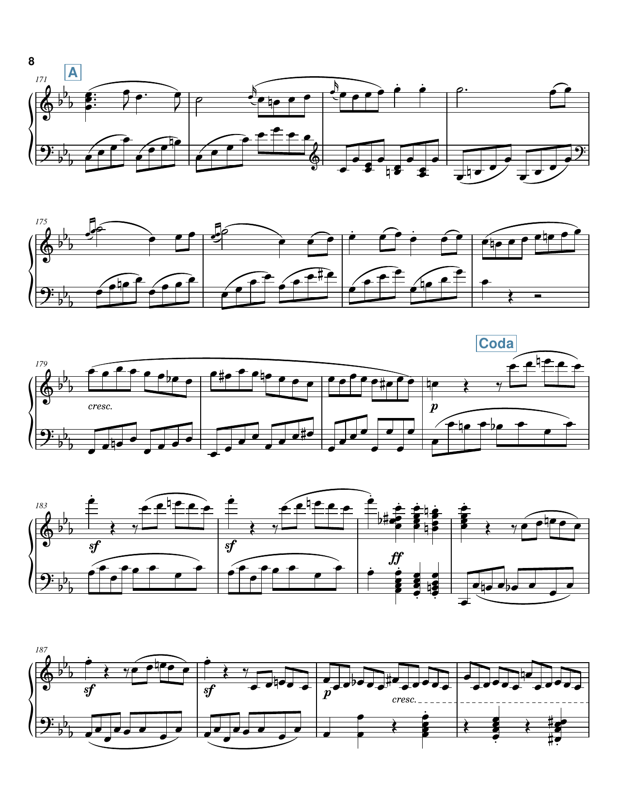
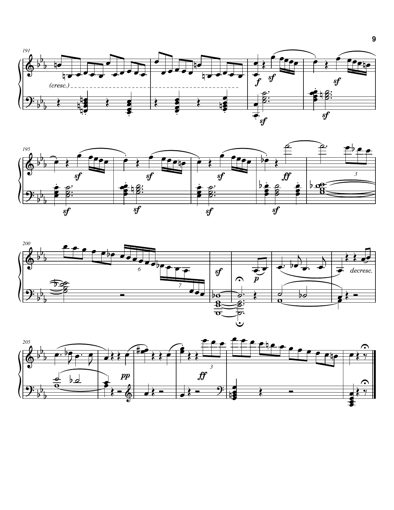
- Sonata No. 8＝第8號奏鳴曲；
- Ludwig van Beethoven＝路德維希・范・貝多芬；
- Rondo. Allegro＝輪旋曲，快板。
A＝疊句，B／C＝插部，TR＝過渡段，RT＝再過渡段，Suffix＝後綴，Coda＝尾聲，⇒表示逐漸轉化，並不強定唯一開始小節。
- dolce＝柔美地；
- cresc.＝漸強；
- decresc.＝漸弱；
- calando＝漸慢、漸弱；
- tr＝顫音；
- p／pp＝弱／很弱，f／ff＝強／很強，fp＝強奏後立即轉弱，sf＝突強。
例3。路德維希・范・貝多芬，C 小調鋼琴奏鳴曲 Op. 13，第三樂章——點此查看樂譜（PDF）。
A段：疊句
貝多芬鋼琴奏鳴曲 Op. 13，副標題為《悲愴大奏鳴曲》（Grande Sonate pathétique），其終樂章是奏鳴輪旋曲式。結構相當複雜：多數段落很清楚，但B段尤其有幾個分析難題，曲式中也包含不少轉化。分析任何輪旋曲式時，先找出A段的位置，是有效的方法。請記得，A的各次重述必須位於主調，但可以有些微變化，例如省略反覆、增加旋律裝飾或採用新伴奏。本曲的A段分別從第1、62、121與171小節開始。
要理解各次A的差異，必須更仔細檢視第一次A的結構。第一次A結束於第17小節，這個長度是透過兩種樂句擴展手法形成的。第一種是從第9小節開始的再來一次手法：第9–12小節是第5–8小節的變化重複。第二種是從第12小節開始的後綴；它的開頭與前面的結尾銜接重疊，並在第17小節結束。因此，原本可以是八小節的主題，透過這兩種擴展手法變成了17小節。
有了這個詳細分析，就能以它為基準，比較其他A段。第二次A重複第一次，第三與第四次A則經過改動。第三次A最短，只有八小節，因為它移除了最初A使用的兩種擴展手法。在它的第九小節，並沒有出現「再來一次」，而是進入新的、不安定的音樂；這段音樂來自A，卻成為過渡段的開頭，帶離A的材料。第四次、也是最後一次A結束於第182小節，共12小節。這個版本仍保留「再來一次」的重複，但A原有的後綴被一個新而長得多的後綴取代，成為全曲的尾聲（第183–210小節）。
B段：第一與第三插部
這個樂章的插部在調性及旋律／動機材料上各有不同，並包含過渡段、再過渡段及後綴等多種輔助段落。第一個插部B最複雜，在全曲中出現兩次。依奏鳴輪旋曲式的預期，第一次B位於對比調性，也就是中音調；在「再現部」重述時，則回到主音C所建立的調。不過，它並未採用與全曲一致的小調，而是使用同主音大調 C 大調（I）。
第一次B顯然位於前兩次A之間，也就是第18–62小節這個範圍內；但幾個因素遮蔽了B的起點，使開始的位置模糊不清。可能的B起點有四處：第25、33、37與44小節。第18小節有和聲與旋律模進，且和聲不安定，因此可確定過渡段從這裡開始。第25小節雖相對安定地呈現旋律材料，但與前面持續的節奏活動沒有分開，而且這個旋律／動機材料不是新的，而是來自A的後綴（見第12小節），因而使可能的開始功能不明顯。第二個候選點是第33小節：此處抵達屬和聲，並引入包含三連音的新旋律材料。不過，第32與33小節之間沒有節奏上的分隔，而且第33小節從屬和聲開始，而非局部主和弦（III），因此也難以確定B由此開始。第37小節同樣不明確：雖然是這組材料第一次在局部主調 E♭ 大調呈現，卻只是延續第33小節引入的旋律／動機，沒有另行引入自身的材料。最後一個候選點是第44小節。由於前面有織度空隙，它是四者之中最清楚的起點；但插部在局部調的PAC之後才開始，是很不尋常的情況，而此處正是如此（見第43小節）。通常，插部所在調的PAC之後應開始後綴。也就是說，仔細考慮之後，仍無法確定B清楚的起點，但這裡確實有一個位於對比調性的插部。為了避免把B的確切起點說成可疑的既定事實，作者認為，最適合描述這段實際情況的方法，是採用轉化概念。因此，第18小節雖明確開始過渡段，B段卻沒有清楚的開頭；過渡段是在第25–44小節之間逐漸「成為」B，無法指定精確時刻。
在B與第二次A之間的部分，就比較清楚。第51小節III調的PAC，標示B的結尾，也同時開始一個後綴。和許多曲式中常見的情況一樣，這個後綴逐漸轉為連接段落，此處是再過渡段，兩者之間沒有清楚分界；這種流動性同樣來自轉化過程。第58小節抵達全曲主調的屬和聲，是音樂已進入再過渡段的常見標誌。
B在再現部返回時，前面接一個新寫的過渡段，從第129小節開始。B的材料約在第134–135小節返回，可與第25–26小節比較。和呈示部中的B一樣，再現部B的確切起點也不明顯。再現部省略了B原有的後綴，也就是原先從第51小節開始的部分；作曲家改寫首次出現在第44小節的旋律／動機材料，使它在轉化過程中融入新的再過渡段，然後帶向第171小節最後一次A。
C段：第二插部
這個樂章的C比B容易辨認得多。它從第79小節清楚開始，前一小節A的結尾也與它明確分開；起始調性是對比的下中音調 A♭ 大調。這一段的內部曲式可視為再現二段式，但返回的內部A並不完整，而是逐漸成為再過渡段。內部A包含一個轉調樂段（第79–86小節），其後將反覆完整寫出，以容納織度變化（第87–94小節）。內部B很短，只有第95–98小節。內部A於第99小節返回時採用新織度，但後句沒有收束；它約在第104小節成為再過渡段，在第107小節強烈抵達屬和聲，戲劇性地準備第121小節A的返回。許多奏鳴輪旋曲式的C類似奏鳴曲式的發展部，本曲卻不是如此；這裡的C是在對比調性中清楚呈現的插部，然後帶向再過渡段。
媒體素材署名
- rondo-combined © Brian Jarvis，採用CC0（公眾領域貢獻宣告）。
查看英文原文
Sonata Rondo Example
Example 3. Ludwig van Beethoven, Piano Sonata in C minor, Op. 13, 3rd movement – Click to See Score (PDF)
The A Sections (Refrains)
The last movement from Beethoven’s Op. 13 piano sonata (subtitled Grande Sonate pathétique) is an example of a sonata-rondo form. The form is fairly complex, and while most of the sections are quite clear, the B section in particular has a few challenges. The form also includes a good amount of becoming. When approaching the form of any rondo, an efficient strategy for determining the form is to find the location of the A sections. Remember that restatements of A need to be in the tonic key and that they may contain slight variations like omitted repeats, melodic embellishments, and/or new accompaniments. In this particular form, the A sections can be found starting in mm. 1, 62, 121, and 171.
In order to understand the differences between the A sections, a more detailed look at the structure of the initial A section is required. The initial A section ends in m. 17, and there are two phrase-expansion techniques used to generate that length. The first is the one-more-time technique that starts in m. 9 (mm. 9–12 are a varied repetition of mm. 5–8). The second expansion technique is the suffix that starts in m. 12. This suffix starts with an elision and ends in m. 17. So, what could have been an 8-measure theme is now 17 measures because of these two expansion techniques.
With that more detailed analysis in mind, we now have a model we can use to compare the other A sections. While the second A section is a repeat of the first, the third and fourth A sections have been altered. The third A section is the shortest, lasting only 8 measures. It achieves this brevity by removing both of the expansion techniques used in the A section’s initial statement. Instead of having the one-more-time technique in its ninth measure, new, unstable music enters that is derived from the A section but is used as the start of a transition away from the A section’s material. The fourth and last A section ends at measure 182, making it 12 measures long. In this version, the one-more-time repetition is still included, but A‘s original suffix has been replaced by a new, much longer suffix that functions as the work’s coda (mm. 183–210).
The B sections (Episodes 1 & 3)
This movement’s episodes vary in key and melodic/motivic material, and they contain multiple auxiliary sections including transitions, retransitions, and suffixes. The first episode, B, is the most complex, and it is stated twice throughout the work. As is expected for sonata-rondo form, the first statement of B is in a contrasting key (the mediant) and its restatement in the “recapitulation” is in the tonic key of C—though instead of being in the minor mode to match the global key, it is in the parallel major key of C major (I).
While it’s very clear that the initial B section occurs somewhere between the first two A sections (mm. 18–62), the initiation of B is obscured by a number of features, resulting in an ambiguous starting point. There are four possible candidates for the beginning of B: mm. 25, 33, 37, and 44. There is certainly a transition starting in m. 18 due to the harmonic/melodic sequence and harmonic instability, but m. 25’s relatively stable presentation of melodic material is obscured by the lack of separation between the rhythmic activity leading into it and the fact the this melodic/motivic material is not new—it’s derived from the A section’s suffix (see m. 12)—obscuring a possible initiation function. The next candidate, m. 33, is marked because of the dominant arrival and because it introduces new melodic material involving a triplet figure. However, this candidate for the start of B is also obscured by lack of rhythmic separation between mm. 32 & 33 and the fact that m. 33 starts on a dominant harmony instead of the tonic (III). M. 37 is a similarly unclear starting point because it continues the melodic/motivic material introduced in m. 33 instead of introducing its own material, even though it is the first statement of that material in the local tonic of E♭ major. The last candidate is m. 44. Of all the options, this is the clearest starting point because of the textural gap that preceded it. However, it is very uncommon for episodes to start after a PAC has been sounded in the local key, which is the case here (see m. 43). Typically a suffix would begin after a PAC occurs in the local key of an episode. This is all to say that, after careful consideration, no clear starting point of B can be determined, and yet it seems very clear that the presence of an episode in a contrasting key occurs. In order to avoid making a dubious factual statement about exactly where B starts, I think the best way to capture the reality of this passage is to invoke the concept of becoming. So, while it’s clear that a transition begins in m. 18, the B section has no clear beginning; instead, the transition “becomes” the B section somewhere between mm. 25 and 44 but in no precise location.
The space between B and the second statement of A is a little clearer. The PAC in III at m. 51 marks the end of B and the simultaneous start of a suffix. As is common in many forms, this suffix turns into a connective section (in this case a retransition) without a clear division between the two sections, again achieving this fluidity through the process of becoming. The dominant arrival in the global key at m. 58 is a common marker of being in a retransition.
When the B section returns in the recapitulation, it is approached with a newly composed transition (m. 129). The return of B‘s material starts around mm. 134–135 (compare with mm. 25–26). Similar to the exposition’s B section, the exact location of the initiation of B in the recapitulation is also obscured. In the recapitulation, B‘s original suffix (m. 51) is omitted; instead, the melodic/motivic material first stated in m. 44 is recomposed in the recapitulation so that it now blends into a new retransition through the process of becoming before it leads to the final statement of A in m. 171.
The C Section (Episode 2)
In this movement, the C section is much easier to identify than the B sections were. It features a very clear beginning in m. 79 (notice also the clear separation of the end of A in the previous measure) and begins in the contrasting key of the submediant (A♭ major). The internal form of this section could be considered a rounded binary form in which the returning A section is not complete and instead becomes a retransition. The internal A section features a modulating period (mm. 79–86) with a written-out repeat to accommodate some textural changes (mm. 87–94). The internal B section is short (mm. 95–98), and the return of the internal A (m. 99) introduces a new texture, but the consequent phrase does not close; instead, it becomes a retransition around m. 104 that reaches a strong dominant arrival (m. 107), featuring a dramatic preparation for the return of A at m. 121. Though many sonata-rondo forms contain a C section akin to a sonata form’s development section, this movement does not, and C is instead a clear statement of an episode in a contrasting key that leads to a retransition.
Media Attributions
- rondo-combined © Brian Jarvis is licensed under a CC0 (Creative Commons Zero) license